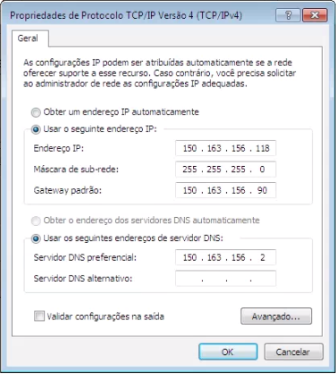

Check List de Configurações¶
Configurando o ip das Estações LEONA¶
A Estação LEONA precisa ser configurada para permitir o acesso a internet.
Para realizar a configuração acesse:
'Painel de controle/Central de Rede e Compartilhamento/Alterar as configurações do adaptador'.
Na conexão que será utilizada, clique com o botão direito e selecione:
'Propriedades/ Protocolo TCP/IP Versão 4 (TCP/IPv4)/ Propiedades'
Utilize a configuração referente a Estação LEONA em uso.
Configuração da Estação de São José dos Campos¶

Configuração da Estação de Cuiaba¶
Substituindo o computador da Estação LEONA¶
Para realizar a substituição de uma máquina da Estação LEONA, dentro da rede do INPE, é necessário informar ao Helpdesk sobre a substituição através do envio de um e-mail para helpdesk@inpe.br, isto é necessário pois o acesso é liberado via MAC.
O corpo do e-mail deve conter:
- MAC da nova Máquina
Para obtero endereço MAC da máquina acesse:
'Painel de controle/Central de Rede e Compartilhamento/Alterar as configurações do adaptador'
Na conexão que será utilizada, clique com o botão direito e selecione ‘Status’ e depois em ‘Detalhes…’ o item ‘Endereço Físico’ é o MAC da Estação.
- Número referente ao ponto de rede
Verifique no selo junto ao ponto de rede na parede.
- Número de patrimônio da nova máquina.
Verifique etiqueta na máquina, geralmente encontra-se no topo do gabinete.